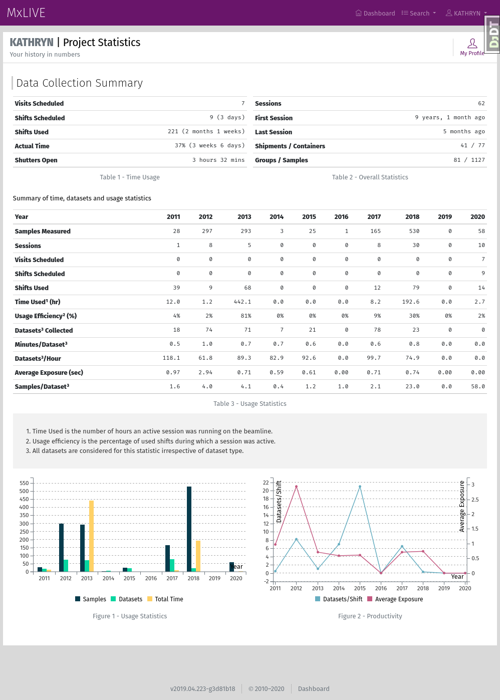

On the Dashboard¶

Screenshot of the MxLIVE Dashboard¶
Menu¶
The menu bar is available throughout the MxLIVE interface, providing quick access:
back to your dashboard,
to detailed lists of all Shipments, Containers, Groups, Samples, Datasets, Reports, Sessions, and Activity in your account,
to view or edit your profile information.
Profile¶

View or Edit Your Profile Information¶
Indicate your preferences for communication and shipping by keeping your profile up-to-date.
Contact person: The preferred primary contact for your group. They may be contacted about shipping, samples, and beamtime (training requirements, team members, scheduling, etc).
Contact email Used along with the Principal Investigator’s email address (uneditable) for notifications about upcoming beamtime.
Contact phone should be in the format [+9-]999-999-9999[ x9999]
Carrier and Account Number refer to your preferred shipping carrier and the applicable account number to be used for returning samples to your group following your completed beamtime.
The address entered is used for shipping labels and determining timezones.
Note
Some fields are only editable by staff.
Project Type: Used for beamline statistics.
Alias: An alternate display name to be used where the beamline schedule is made public. Primarily used for industrial clients or other users who require extra confidentiality.
Detailed Lists¶

Detailed lists of Shipments, Containers, Groups, Samples, Datasets, Reports, Sessions, and Activity¶
Detailed lists give you access to a full record of your activity in MxLIVE. Even after dataset and report files have been removed from beamline data storage (as storage limits require), meta-data remains in MxLIVE in perpetuity.
Each list has a set of filters available, along with a search box to quickly find what you are looking for.
Clicking on an entry in the list will either take you to a separate page or a modal window with more details.

Note
Your entries in MxLIVE are only accessible from your account and an administration account. The only exception is draft shipments, which are only accessible by you, and become visible to staff once they have been sent.
Toolbar¶
Note
This area is used as a toolbar throughout MxLIVE.
Tools and links available from the dashboard toolbar:
New Shipment: open the shipment creation wizard
Sessions: go to a list of all past and current sessions
Usage Stats: go to a page of detailed statistics related to your account
Schedule: go to the full beamline schedule
Usage Stats¶
View your history at the beamline through numbers. Your usage statistics contain bulk information about shipments and samples you have sent, data you have collected and analyzed, and time you have spent using the beamline.
Beamtime¶
Upcoming beamtime is listed here, along with past beamtime completed in the last year. The info icon displays beamtime information which may also be sent by email around one week before your beamtime.
Shipments¶
Your draft shipments are listed here, along with shipments currently at the beamline, and past shipments returned in the last year.
Sessions¶
Up to seven of your most recent sessions (started within the last year) are listed here.
Guide¶
Helpful information, including video tutorials, images, or special instructions are posted in the User Guide. Click to expand the item and view an image or video.